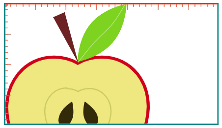
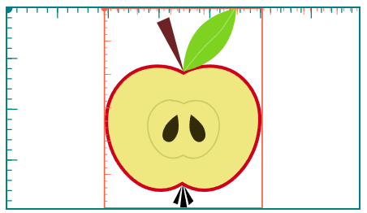

В SVG существует две системы координат:
viewport spaceuser spaceИзначально системы и их единицы измерения соответствуют друг другу:
<svg width="350" height="200">
…
</svg>

Сейчас видно только систему координат содержимого (она показана красным), потому что системы совпадают и одна скрыта под другой.
Если добавить вьюбокс или трансформацию, содержимое и его система координат начинают смещаться и масштабироваться:
<svg width="350" height="200" viewBox="0 0 237 300">
…
</svg>

Отсчёт координат содержимого начинается из левого верхнего угла (в точке 0,0). Без вьюбокса это левый верхний угол вьюпорта (бирюзовая точка), с вьюбоксом — левый верхний край вьюбокса (красная точка).
То есть теперь расположение содержимого будет отсчитываться относительно новой системы координат, а не от вьюпорта, из-за чего фигура оказывается не слева, а ближе к центру, а системы координат больше не совпадают.
Левый верхний угол фигуры находится в точке 0 0. Добавьте viewBox со значением 0 0 200 150 и посмотрите, как изменится положение фигуры.
Поменяйте местами значения ширины и высоты и посмотрите, где окажется фигура на этот раз.
1 task
2 task